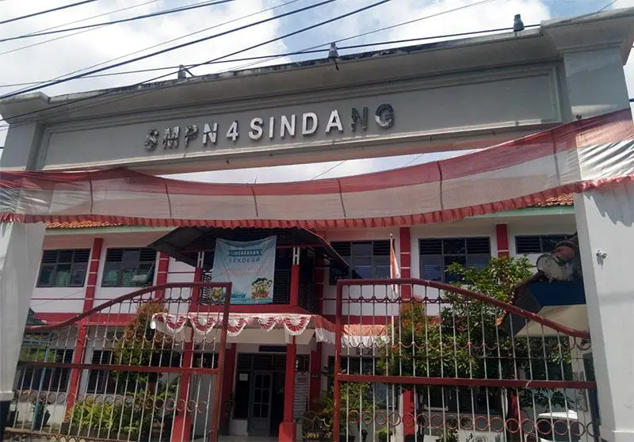
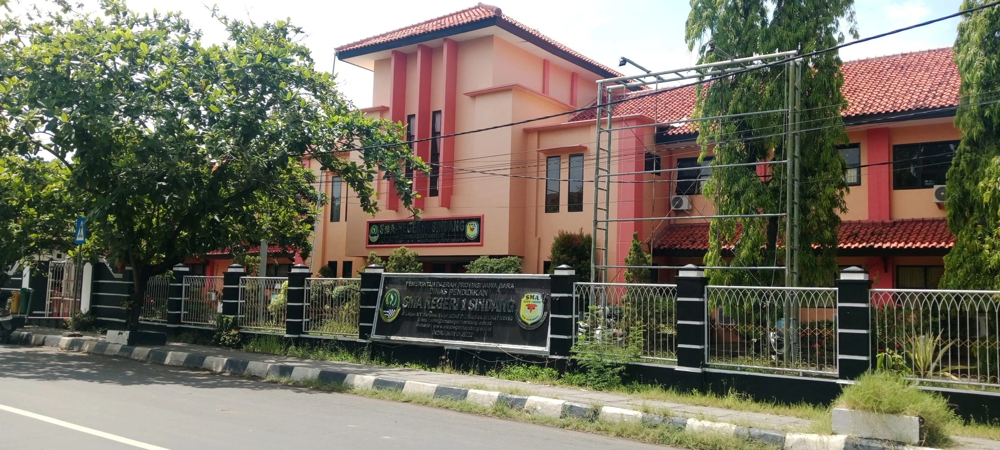

Tentang Diriku
Perkenalan singkat tentang diriku.
Assalamu'alaikum. Saya Ririn Jakatrini, seorang ibu rumah tangga yang percaya bahwa keluarga adalah tempat pertama untuk menanamkan nilai kasih sayang, kejujuran, dan pendidikan. Saya senang memasak, merawat tanaman hias, serta menciptakan suasana rumah yang nyaman bagi keluarga. Bagi saya, setiap hari adalah kesempatan untuk terus belajar, berbagi kebaikan, dan memberikan dukungan terbaik bagi suami serta kelima anak saya agar tumbuh menjadi pribadi yang berakhlak, mandiri, dan bermanfaat bagi sesama.
Timeline Pendidikan
Perjalanan pendidikanku.
-

SD
SDN 3 Margadadi Indramayu
-

SMP
SMPN 4 Sindang
-

SMA
SMAN 1 Sindang
Keahlian
Kombinasi kemampuan teknis dan interpersonal yang terus kukembangkan.
Hard Skills
- Household Management
- Cooking
- Child Care
- Plant Care
Soft Skills
- Empathy
- Communication
- Patience
- Continuous Learning
Motto Hidup
"Kunci bahagia adalah syukur dan sabar"